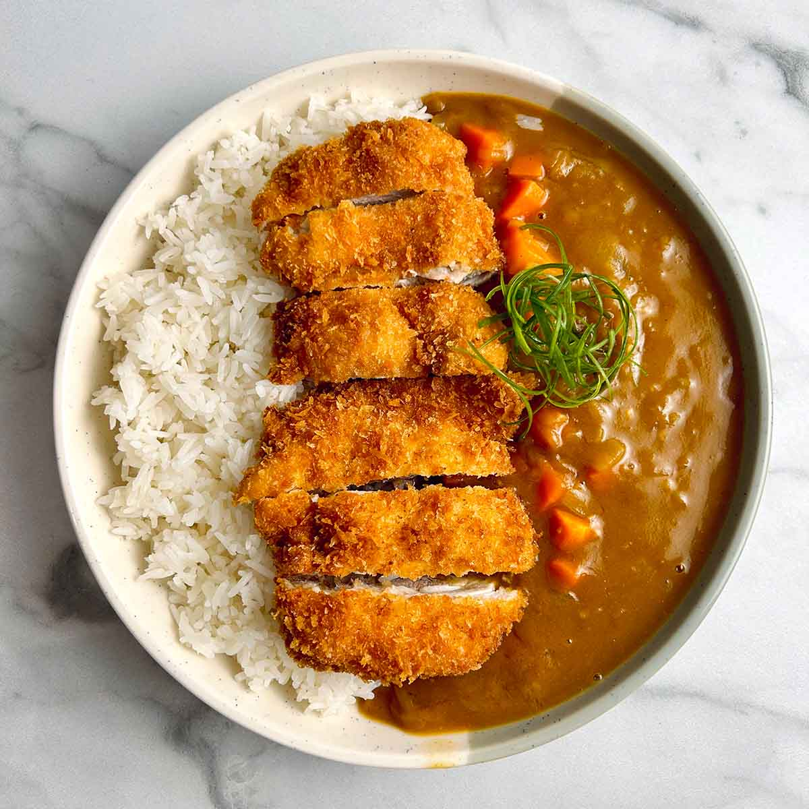

Chicken Katsu Curry

Description
This katsu chicken curry was introduced to
Japan by the British more than a century ago
and has become a favorite dish to make at home.
This recipe combines a rich curry sauce with
a crispy, fried chicken cutlet. Serve with
steamed Japanese rice, red and yellow daikon
pickles, tonkatsu sauce, soft-boiled eggs,
and Japanese 7-spice seasoning.
Ingredients
Curry Sauce
- 1 tablespoon oil
- 2 medium onions, chopped
- 3 medium potatoes, chopped
- 2 medium carrots, chopped
- 3 ½ cups water, or as needed
- 1 (3.5 ounce) container curry sauce mix (such as S&B Golden Curry)
- 1 tablespoon ketchup
- 1 tablespoon Worcestershire sauce
- 1 tablespoon apricot jam
- 1 tablespoon soy sauce
- 1 teaspoon curry powder
Chicken Katsu
- 4 (5 ounce) skinless, boneless chicken breast halves
- kosher salt and ground black pepper to taste
- ¼ cup all-purpose flour
- 1 large egg, beaten, or as needed
- 1 cup panko bread crumbs
- ½ cup peanut oil for frying, or as needed
Steps
- Make curry sauce: Heat oil in a large pot over medium-high heat. Cook onions in hot oil until soft and
starting to caramelize, about 8 minutes. Add potatoes and carrots. Pour in water and bring to a boil. Reduce
heat to low, cover, and cook until potatoes are soft, about 45 minutes.
- Remove from heat and stir in curry sauce mix until dissolved. Add ketchup, Worcestershire sauce, jam, and
soy sauce. Simmer until sauce is thickened, 10 to 15 minutes.
- Meanwhile, make chicken katsu: Flatten chicken breasts with a kitchen mallet to a thickness of 1/4 inch.
Season with salt and pepper.
- Place flour onto a large plate, add beaten egg to a small plate, and place bread crumbs onto a second large
plate.
- Press chicken into flour to coat, dip in beaten egg, and press in bread crumbs to coat generously.
- Heat oil in a large saucepan to 355 degrees F (180 degrees C). Carefully lower breaded cutlets into hot oil
and fry until golden brown, about 3 minutes per side. An instant-read thermometer inserted into a cutlet
should read 165 degrees F (75 degrees C).
- While chicken is cooking, stir curry powder into sauce until incorporated.
- Slice chicken into strips and spoon curry sauce over the top to serve.